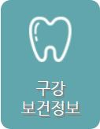

이달의 건강이슈
환경오염과 유해물질
인간은 각종 생활공간에서 공기와 물, 음식물,
주거, 생활용품 등의 생활자원을 활용함으로써
생존을 유지하고 사회생활을 지속...
자세히보기
건강생활습관정보
신체활동! 알려드리겠습니다!
해외여행시 주의해야 할 감염병! 알려드리겠습니다!
구강병 예방과 관리방법! 알려드리겠습니다!
담배 끊는 방법! 알려드리겠습니다!
제대로 손씻기 방법! 알려드리겠습니다!